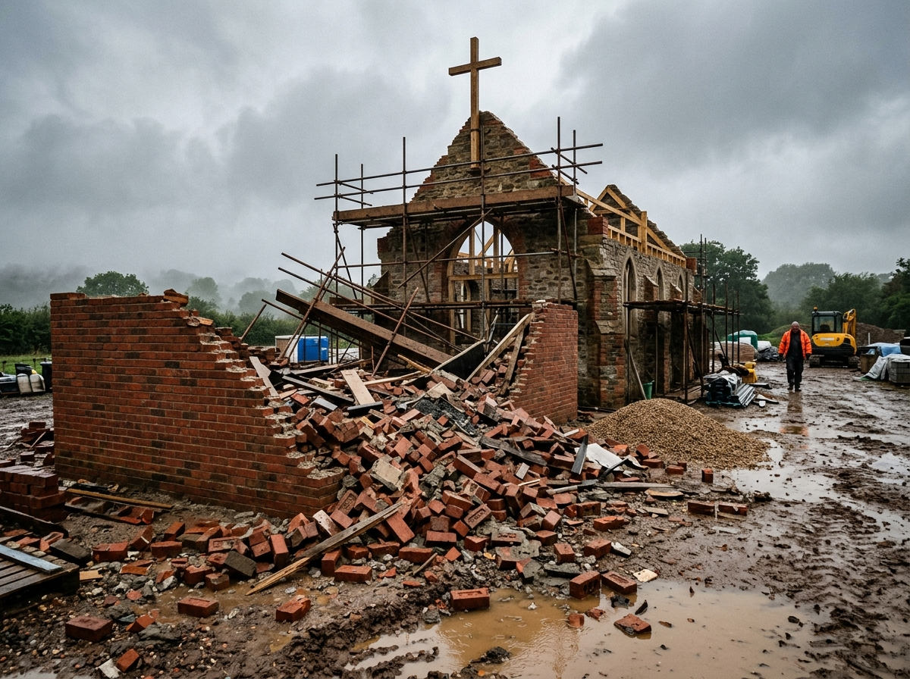

Livro de Intenções Sagradas
Altar do Padre Elias
«Nenhum nó resiste à oração fervorosa e à intercessão de Nossa Senhora Desatadora dos Nós.»
Pelo tempo de recolhimento no altar, o Padre Elias consagrará individualmente apenas 5 famílias nesta vigília. Restam apenas 2 lugares no livro sagrado desta noite.

A nossa fé permanece de pé!
A parede da nossa capela ruiu durante a obra, mas não nos deixamos abater. A sua semente de fé ajuda a reerguer esta casa de Maria e coloca a sua família sob a proteção de 7 dias de oração.
Inscrever a Minha Família no Altar
Preencha com o coração aberto para o Padre Elias levar suas preces à vigília.
A Chama da Oração está Acesa no Altar!
Os nomes de foram inscritos no livro de intenções para a vigília do Padre Elias desta noite.
- Oração Individual no Altar: Nomes rezados na vigília solene.
- Guia do Cerco de 7 Dias: Envio imediato em PDF para o telemóvel.
- 7 Áudios Sagrados do Padre Elias: Orações diárias para desatar os nós.
- Apoio à Obra da Capela: Ajuda direta para reerguer a parede caída.
Pagamento seguro via Cartão, Multibanco ou MB WAY através da KashPay.
«O meu filho não falava comigo há 4 meses. No 3º dia do Cerco, ele bateu à minha porta em lágrimas pedindo perdão. Nossa Senhora não desampara uma mãe.»
— Maria Helena P., Porto